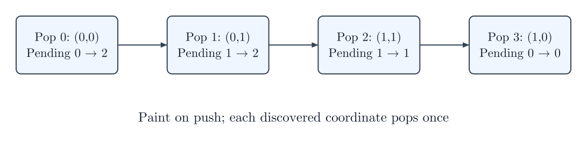
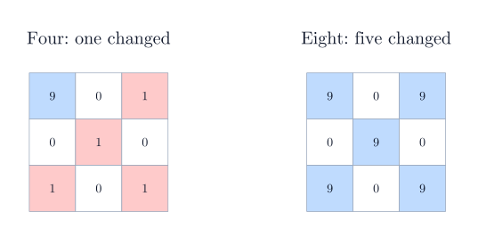
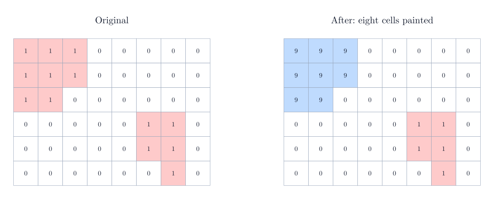
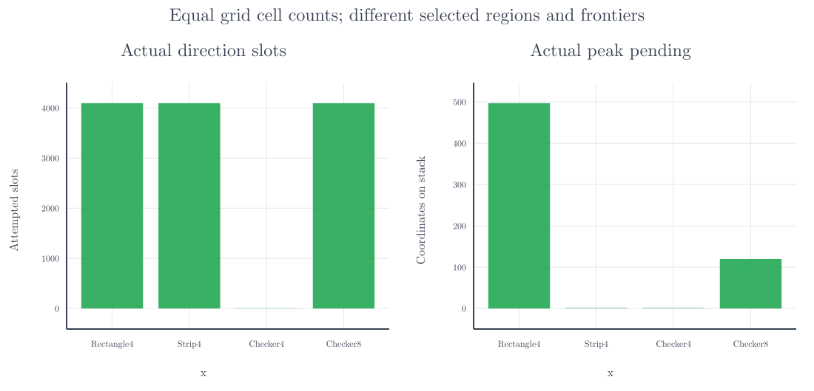
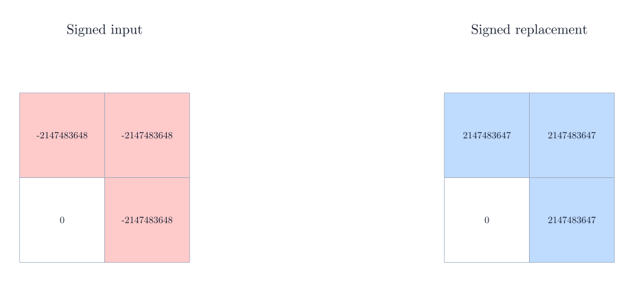

Flood fill: exact regions, connectivity and actual stack work
Abstract
Clicking a paint bucket selects a connected region sharing the clicked cell's original value. The replacement changes that region, while disconnected cells with the same value remain unchanged. This report uses datamunge's iterative C++ flood fill, preserves the original six-by-eight example and records actual discoveries, pops and neighbor reads. A small diagonal example separates four from eight connectivity. Work counts, shape validation and owned traces make the algorithm's behavior and costs explicit.
The seed component and the actual traversal
Fix the seed's original integer value v. The selected region consists of all cells reachable from the seed along a path whose cells all originally equal v, using the chosen adjacency. Four connectivity uses up, down, left and right; eight also allows diagonals. These are the usual image connectivity conventions described by [Intel IPP](https://www.intel.com/content/www/us/en/docs/ipp/developer-guide-reference/2021-12/flood-fill-functions.html). All signed integer values are valid categories. Zero is an ordinary value for flood fill: seeding a zero can paint a background component too.
The native kernel keeps a heap-allocated LIFO stack. It paints a cell when pushing it, so another neighbor cannot push it again. Four-direction scans run up/down/left/right; eight-direction scans run NW/N/NE/W/E/SW/S/SE. LIFO means that a later discovery can pop first. The pop order therefore describes depth-first work, not distance from the seed, and need not match a recursive implementation's order.
The first program uses a two-by-two all-one grid. Its table and method diagram read actual pop records from the executing kernel, rather than reconstructing an imagined traversal. The first cell pushes down and then right, so right pops next even though down was discovered first.
#include <dm/dm.hpp>
namespace dm=datamunge;
int main(){
std::filesystem::create_directories("build");
const auto t=dm::algorithms::flood_fill_trace({{1,1},{1,1}},0,0,9);
std::print("| pop | row | column | pending after pop | pending after scan | probe range |\n| ---: | ---: | ---: | ---: | ---: | --- |\n");
dm::graphics::Diagram d(54,1100);dm::graphics::DiagramNodeStyle style;style.width=3.5;style.height=2;style.font_size=23;
for(std::size_t i=0;i<t.visits.size();++i){const auto&v=t.visits[i];std::print("| {} | {} | {} | {} | {} | [{},{}) |\n",i,v.row,v.col,v.stack_after_pop,v.stack_after_scan,v.probe_begin,v.probe_end);
const auto id=std::to_string(i);d.node(id,{5.2*double(i),0},std::format("Pop {}: ({},{})\nPending {} → {}",i,v.row,v.col,v.stack_after_pop,v.stack_after_scan),style);if(i)d.edge(std::to_string(i-1),id);
}
const auto&w=t.work;std::print("\nChanged {}; direction slots {}; in-bounds value reads {}; neighbor discoveries {}; peak pending {}.\n",w.filled,w.neighbor_slots,w.in_bounds_neighbors,w.accepted_neighbors,w.peak_stack);
d.text({7.8,-2.5},"Paint on push; each discovered coordinate pops once",25).save_svg("build/flood_fill_tiny.svg");
if(w.filled!=4||w.peak_stack!=2||t.visits[1].col!=1)throw std::runtime_error("tiny actual traversal");
}| pop | row | column | pending after pop | pending after scan | probe range |
|---|---|---|---|---|---|
| 0 | 0 | 0 | 0 | 2 | [0,4) |
| 1 | 0 | 1 | 1 | 2 | [4,8) |
| 2 | 1 | 1 | 1 | 1 | [8,12) |
| 3 | 1 | 0 | 0 | 0 | [12,16) |
Changed 4; direction slots 16; in-bounds value reads 8; neighbor discoveries 3; peak pending 2.

A cell is pushed and popped once, but it can be read by several neighbor probes. Here sixteen direction slots include eight outside slots; eight slots actually read grid values. Already painted queued cells can be observed before they pop. A nonmatching value alone does not tell whether it was visited: the same replacement value might have existed before the operation.
Corner contact changes the selected region
The native checkerboard fixture has five one-valued cells in a three-by-three grid. With four connectivity the corner seed has no one-valued orthogonal neighbor; with eight connectivity the center joins all four corners. The following paired figure uses a shared categorical palette, so value 9 means the same color in both panels.
#include <dm/dm.hpp>
namespace dm=datamunge;
int main(){
std::filesystem::create_directories("build");
const auto input=dm::algorithms::component_checkerboard(3,3);
const auto four=dm::algorithms::flood_fill_trace(input,0,0,9,false);
const auto eight=dm::algorithms::flood_fill_trace(input,0,0,9,true);
std::print("| connectivity | changed | direction slots | peak pending | binary foreground components |\n| --- | ---: | ---: | ---: | ---: |\n");
for(bool diagonal:{false,true}){const auto&t=diagonal?eight:four;std::print("| {} | {} | {} | {} | {} |\n",diagonal?"Eight":"Four",t.work.filled,t.work.neighbor_slots,t.work.peak_stack,dm::algorithms::connected_components(input,diagonal).count);}
dm::graphics::diagram_value_images({{four.output,"Four: one changed"},{eight.output,"Eight: five changed"}}).save_svg("build/flood_fill_connectivity.svg");
if(four.work.filled!=1||eight.work.filled!=5)throw std::runtime_error("diagonal connectivity");
}| connectivity | changed | direction slots | peak pending | binary foreground components |
|---|---|---|---|---|
| Four | 1 | 4 | 1 | 5 |
| Eight | 5 | 40 | 3 | 1 |

The component count is a related binary control, not the flood-fill return value.
connected_components treats every nonzero cell as foreground, whereas flood fill
requires equality with one particular seed value. On [1,2] there is one binary
foreground component but a fill seeded at value 1 changes just one cell. Run labeling
on an exact-value mask if that is the region definition you need.
Preserve the original six-by-eight example
The original fixture has two disconnected value-1 components, of sizes eight and five. The seed is the upper-left cell, the replacement is 9, and connectivity is four. The original before/after grids and changed count are printed below. Native component statistics independently measure the two binary foreground areas before painting.
#include <dm/dm.hpp>
namespace dm=datamunge;
int main(){
std::filesystem::create_directories("build");
const auto input=dm::algorithms::flood_fill_example();auto output=input;
const auto filled=dm::algorithms::flood_fill(output,0,0,9);
for(bool after:{false,true}){std::print("\n{}:\n\n",after?"After":"Before");const auto&g=after?output:input;
for(const auto&row:g){for(int v:row)std::print("{} ",v);std::print("\n");}}
const auto stats=dm::algorithms::connected_component_stats(dm::algorithms::connected_components(input));
std::print("\nOriginal fill: changed {}; foreground areas {} and {}; lower-right still one {}.\n",filled,stats[0].area,stats[1].area,output[3][5]==1);
auto mixed=std::vector<std::vector<int>>{{1,2}};const auto components=dm::algorithms::connected_components(mixed).count;
std::print("Mixed [1,2]: nonzero components {}; exact-value seed fill {}.\n",components,dm::algorithms::flood_fill(mixed,0,0,9));
dm::graphics::diagram_value_images({{input,"Original"},{output,"After: eight cells painted"}}).save_svg("build/flood_fill_original.svg");
if(filled!=8||stats[0].area!=8||stats[1].area!=5||output[3][5]!=1)throw std::runtime_error("original grid preservation");
}Before:
1 1 1 0 0 0 0 0 1 1 1 0 0 0 0 0 1 1 0 0 0 0 0 0 0 0 0 0 0 1 1 0 0 0 0 0 0 1 1 0 0 0 0 0 0 0 1 0
After:
9 9 9 0 0 0 0 0 9 9 9 0 0 0 0 0 9 9 0 0 0 0 0 0 0 0 0 0 0 1 1 0 0 0 0 0 0 1 1 0 0 0 0 0 0 0 1 0
Original fill: changed 8; foreground areas 8 and 5; lower-right still one true. Mixed [1,2]: nonzero components 1; exact-value seed fill 1.

These colors are categories, not numerical intensities. diagram_value_images
assigns its eight-color cycle to the sorted union of nonzero values across the two
panels, keeping the same value consistent within a figure. More than eight categories
repeat colors, so numeric labels remain important. Signed values are supported;
zero is drawn white. The separate component-ID renderer keeps its historical cyclic
mapping, including the color alias between label IDs 1 and 9.
Count work without substituting timings
Let R be the row count, N the total cells and K the number actually changed. Full rectangular validation inspects every row width before any shortcut or mutation. After that, each discovered cell changes value immediately, so it cannot be discovered again. Every changed cell eventually pops, and each pop attempts exactly D neighbor slots, with D=4 or 8. This proves total ordinary time O(R+K), rather than ignoring shape validation in an O(K) claim. Work counts are actual integer events; they are not hardware timings or a speed comparison with a queue or scanline method.
The pending stack needs O(K) space in the worst case. The explicit stack avoids recursive call-depth limits but does not make the method constant-space. Its peak depends on geometry and discovery order, even for equal region sizes.
#include <dm/dm.hpp>
namespace dm=datamunge;
int main(){
std::filesystem::create_directories("build");
using Grid=std::vector<std::vector<int>>;
const std::vector<Grid> inputs{Grid(32,std::vector<int>(32,1)),Grid(1,std::vector<int>(1024,1)),dm::algorithms::component_checkerboard(32,32),dm::algorithms::component_checkerboard(32,32)};
const std::vector<std::string> names{"Rectangle4","Strip4","Checker4","Checker8"};std::vector<double> slots,peaks;
std::print("| input | rows | cells | changed K | direction slots | in-bounds reads | peak pending |\n| --- | ---: | ---: | ---: | ---: | ---: | ---: |\n");
for(std::size_t i=0;i<inputs.size();++i){auto g=inputs[i];const auto w=dm::algorithms::flood_fill_work(g,0,0,9,i==3);std::print("| {} | {} | {} | {} | {} | {} | {} |\n",names[i],w.rows,w.cells,w.filled,w.neighbor_slots,w.in_bounds_neighbors,w.peak_stack);slots.push_back(double(w.neighbor_slots));peaks.push_back(double(w.peak_stack));if(w.neighbor_slots!=(i==3?8:4)*w.filled)throw std::runtime_error("direction work identity");}
auto attempts=dm::graphics::RPlot::barplot(slots,names).title("Actual direction slots").ylab("Attempted slots");
auto frontier=dm::graphics::RPlot::barplot(peaks,names).title("Actual peak pending").ylab("Coordinates on stack");
dm::graphics::RLayout::create(1,2).add(attempts).add(frontier).size(1100,530).title("Equal grid cell counts; different selected regions and frontiers").fit_panels().save_svg("build/flood_fill_work.svg");
}| input | rows | cells | changed K | direction slots | in-bounds reads | peak pending |
|---|---|---|---|---|---|---|
| Rectangle4 | 32 | 1024 | 1024 | 4096 | 3968 | 497 |
| Strip4 | 1 | 1024 | 1024 | 4096 | 2046 | 1 |
| Checker4 | 32 | 1024 | 1 | 4 | 2 | 1 |
| Checker8 | 32 | 1024 | 512 | 4096 | 3906 | 120 |

flood_fill_work uses the ordinary mutation and records no history. An owned trace
also copies the entire input and output grids, even when K is small, and appends the
actual K pop records and D×K probe records. Its complete admission bound is
for an active fill, and C=2(R+N) for a no-op. The units are stored outer-row entries, cell entries, visits and probes, not bytes or a peak-memory estimate. The default one-million-entry cap is checked before copying; zero disables only the optional cap. Overflow and container limits remain checked. The upper bound can reject a large grid whose actual selected component is tiny. No truncated trace is returned.
Input, ownership and replacement controls
Empty and zero-width rectangular grids return zero. A seed outside a nonempty grid also returns zero. If the replacement already equals the seed value, zero means no cells changed; it does not mean the seed has no component. A preexisting replacement cell is not a bridge: [1,9,1] seeded at its left end becomes [9,9,1].
All rows must have the same width, including for empty-width, outside-seed and
same-value requests. Ragged grids throw before mutation; the original unchecked
implementation could read beyond a short row. Coordinates use guarded size_t
arithmetic. The pure neighborhood helper can check virtual full-width dimensions
without allocating an impossible grid or multiplying those dimensions.
#include <dm/dm.hpp>
namespace dm=datamunge;
int main(){
std::filesystem::create_directories("build");
using Grid=std::vector<std::vector<int>>;bool ragged=false,quota=false;
Grid malformed{{1,1},{1}};const auto saved=malformed;
try{dm::algorithms::flood_fill(malformed,0,1,9);}catch(const std::invalid_argument&){ragged=true;}
try{dm::algorithms::flood_fill_trace({{1,1},{1,1}},0,0,9,false,31);}catch(const std::length_error&){quota=true;}
const auto exact=dm::algorithms::flood_fill_trace({{1,1},{1,1}},0,0,9,false,32);
Grid same{{1,1}},outside{{1}},barrier{{1,9,1}};const auto a=dm::algorithms::flood_fill(same,0,0,1),b=dm::algorithms::flood_fill(outside,1,0,9),c=dm::algorithms::flood_fill(barrier,0,0,9);
std::print("Ragged rejected {}; unchanged {}; whole cap31 rejected {}; cap32 changed {}.\n",ragged,malformed==saved,quota,exact.work.filled);
std::print("Same-value changed {}; outside-seed changed {}; [1,9,1] changed {}; output [{},{},{}].\n",a,b,c,barrier[0][0],barrier[0][1],barrier[0][2]);
const auto full=std::numeric_limits<std::size_t>::max();const auto virtual_corner=dm::algorithms::flood_fill_neighborhood(full,full,full-1,full-1,true);
std::print("Virtual size_t-max lower-right corner: NW {}; N {}; NE {}; W {}; E {}; SW {}; S {}; SE {}.\n",virtual_corner.candidates[0].in_bounds,virtual_corner.candidates[1].in_bounds,virtual_corner.candidates[2].in_bounds,virtual_corner.candidates[3].in_bounds,virtual_corner.candidates[4].in_bounds,virtual_corner.candidates[5].in_bounds,virtual_corner.candidates[6].in_bounds,virtual_corner.candidates[7].in_bounds);
Grid input{{std::numeric_limits<int>::min(),std::numeric_limits<int>::min()},{0,std::numeric_limits<int>::min()}};
const auto trace=dm::algorithms::flood_fill_trace(input,0,0,std::numeric_limits<int>::max());const auto original=trace.input;input[0][0]=7;
std::print("Full signed values: target {}; replacement {}; changed {}; owned input unchanged {}.\n",trace.work.target,trace.work.new_value,trace.work.filled,trace.input==original&&trace.input[0][0]!=input[0][0]);
dm::graphics::diagram_value_images({{trace.input,"Signed input"},{trace.output,"Signed replacement"}}).save_svg("build/flood_fill_controls.svg");
if(!ragged||malformed!=saved||!quota||a||b||c!=1||trace.work.filled!=3)throw std::runtime_error("checked controls");
}Ragged rejected true; unchanged true; whole cap31 rejected true; cap32 changed 4. Same-value changed 0; outside-seed changed 0; [1,9,1] changed 1; output [9,9,1]. Virtual size_t-max lower-right corner: NW true; N true; NE false; W true; E false; SW false; S false; SE false. Full signed values: target -2147483648; replacement 2147483647; changed 3; owned input unchanged true.

The ordinary in-place API can retain earlier paint if an allocation or work-counter failure interrupts an active traversal. Shape and domain validation precede any mutation. The trace accepts read-only input and returns independent storage; a failure returns no partial trace and never paints the caller's grid.
Scope and reproducibility
This implementation uses exact equality and defaults to four connectivity. The [scikit-image flood-fill API](https://scikit-image.org/docs/stable/api/skimage.segmentation.html#skimage.segmentation.flood_fill) also offers tolerance and arbitrary footprints, and defaults to full connectivity when neither footprint nor connectivity is supplied. Its [worked example](https://scikit-image.org/docs/stable/auto_examples/segmentation/plot_floodfill.html) shows why tolerance can matter for noisy intensities. Those options are outside this integer exact-value API. The method here retains the original explicit cell stack; no scanline-space or tolerance guarantees are implied.
Every displayed result and figure is generated by a complete editable C++ program. The examples use native deterministic fixtures, with no external dataset. The core is checked against frozen original final grids and actual traversal records, an independent breadth-first membership oracle, full-width geometry controls, ownership and quota tests, and strict address/undefined-behavior sanitizers. Native figures are saved to local build files and copied into the report by the report runner.